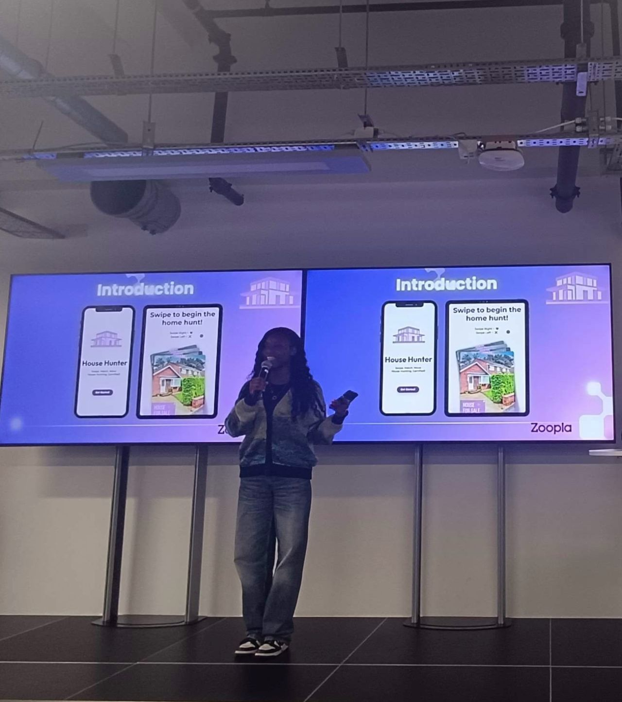

Public Speaking
I speak about representation in tech, women in STEM, AI ethics and algorithmic bias, empowering the next generation of young people entering the corporate world. I also work on making tech feel reachable for people who don't usually see themselves in it, from school events to university keynotes.
- 2026 Keynote Speaker Black Access Project Event · King's College London
- 2024 International Women's Day Speech Celebrating Women in STEM · Westcliff High School for Boys
- 2023 Unveiling the Black Box Bias Unveiling the Black Box Bias · House of Lords
- 2023 AI ethics and algorithmic bias AI ethics and algorithmic bias · University of Oxford
